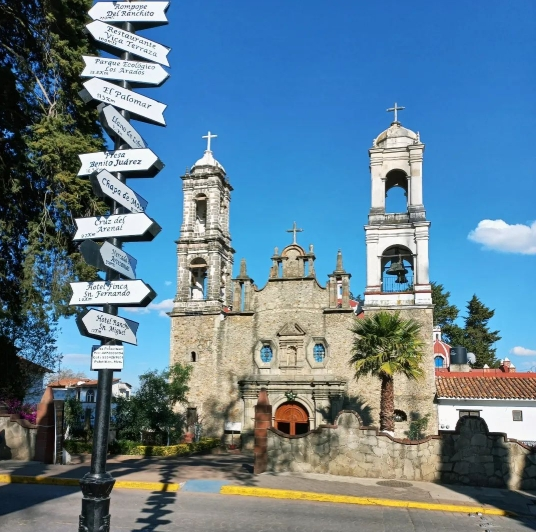
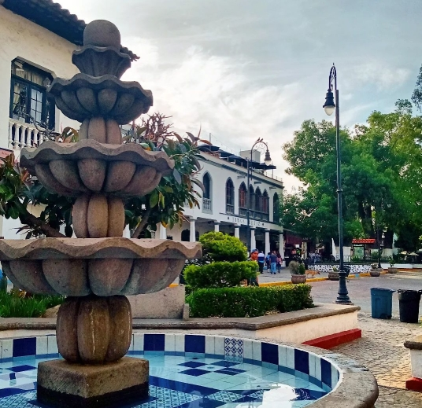
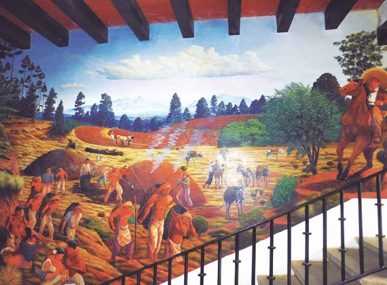

Actividades Económicas

Las actividades económicas de Villa del Carbón se basan principalmente en tres categorías: primarias, secundarias y terciarias. Entre las actividades primarias destaca la agricultura, la cual se practica desde antes de la llegada de la conquista española, así como la producción de carbón vegetal, que históricamente se exportaba hacia la capital. Por su parte, el turismo pertenece al sector terciario y constituye la base de la economía villacarbonense.
Tipo de Actividad

Las actividades económicas en Villa del Carbón son diversas, con un enfoque: - agricultura, - producción de carbón vegetal - turismo Lo que refleja la historia y la cultura de la región.
Primarias

Agricultura Villa del Carbón cuenta con una economía agrícola significativa, con una producción anual que incluye cultivos como el maíz, el frijol, la calabaza y otros productos. Esta actividad no solo genera empleo para la población local, sino que también contribuye a la seguridad alimentaria de la región, garantizando el sustento de las comunidades. La práctica de la siembra se realiza durante todo el año, tanto mediante cultivos de temporal como a través de sistemas de riego.
Secundarias

Producción de Carbón Vegetal Históricamente, la producción de carbón vegetal ha sido una de las actividades económicas más importantes de Villa del Carbón. Desde la época colonial, esta actividad ha sido fundamental para la economía local, y el municipio ha sido reconocido por su producción de carbón, de la cual proviene su nombre. Aunque en la actualidad esta actividad ha disminuido en comparación con el pasado, continúa siendo un componente relevante de la economía local.
Terciarias
El turismo es la principal fuente de ingresos económicos del municipio, gracias a sus ríos, bosques y embalses (presas). En la región se ofrecen diversas actividades recreativas como senderismo, ciclismo de montaña, campismo, rappel, kayak, canotaje, navegación, pesca deportiva y velerismo. Asimismo, se elaboran artículos de lana y tejidos artesanales, como chalecos, ponchos, suéteres, mantas y tapetes. También existe una importante producción de alimentos típicos, entre los que destaca el tradicional licor artesanal, el rompope. En la zona centro del municipio se concentran numerosas tiendas y comercios minoristas; de acuerdo con diversos datos, en la colonia central operan varios cientos de estos establecimientos. El sector servicios —que incluye hotelería, hospedaje, restaurantes, transporte y guías turísticos— resulta fundamental para el aprovechamiento y fortalecimiento de la actividad turística.
Bibliografía
https://foem.edomex.gob.mx/sites/foem.edomex.gob.mx/files/catalogo/Villa-del-Carbon.pdf